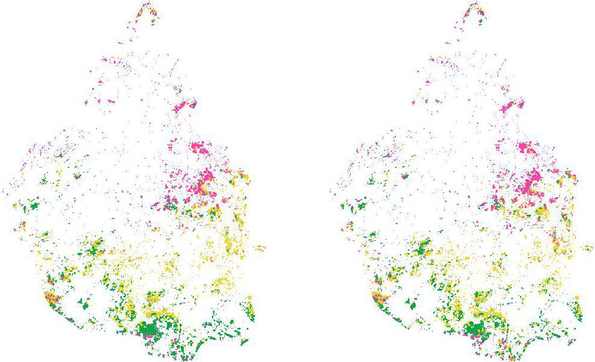

\[ \begin{align}
blue &\in [0,255] \\
green &\in [0,255] \\
red &\in [0,255]\\
nir &\in [0,255]\\
swir_1 &\in [0,255]\\
thermal &\in [0,255]\\
swir_2 &\in [0,255]
\end{align}
\]
pixel
\[ \begin{align}
pixel \in [0,255]^7
\end{align}
\]
Proyección
\[ \begin{align}
p_{rgb} : [0,255]^7 \rightarrow [0,255]^3
\end{align}
\]
Maquinas de soporte vectorial

Maquinas de soporte vectorial

Maquinas de soporte vectorial

uno contra uno
\[ \begin{align}
\text{Se entrenan } \frac{n(n - 1)}{2} \text{ clasificadores binarios}
\end{align}
\]
- vegetación
- asentamientos urbanos
- agua
- tierra agrícola o pastizal
resultado de la clasificación 1985
resultado de la clasificación 2009
Algoritmo MAD (multivariate alteration detection)
\[ \begin{align}
(G_{1_1} ,\ldots, G_{1_n})\\
(G_{2_1} ,\ldots, G_{2_n})
\end{align}
\]
\[ \begin{align}
U & =a^\intercal \boldsymbol{G}_1 = a_1G_{1_1} + \ldots + a_nG_{1_n}\\
V & =b^\intercal \boldsymbol{G}_2 = b_1G_{2_1} + \ldots + b_nG_{2_n}\\
\end{align}
\]
\[ \begin{align}
U - V
\end{align}
\]
\[
\begin{align}
var(U) & =a^\intercal cov(\boldsymbol{G}_1)a \\
var(V) & =b^\intercal cov(\boldsymbol{G}_2)b \\
cov(U,V) & =a^\intercal cov(\boldsymbol{G}_1,\boldsymbol{G}_2)b = \rho.
\end{align}
\]
\[
cov(U,V) \text{ sujeto a } var(U)=var(V)=1
\]
\[
\Sigma=
\begin{bmatrix}\Sigma_{11} & \Sigma_{12}\\\Sigma_{21} & \Sigma_{22} \end{bmatrix}
\]
\[ \begin{align}
U & =a^\intercal \boldsymbol{G}_1\\
V & =b^\intercal \boldsymbol{G}_2\\
\end{align}
\]
\[\begin{align}
var(U) &= a^\intercal \Sigma_{11} a \\
var(V) &= b^\intercal \Sigma_{22} b \\
cov(U,V)= cov(V,U) &= a^\intercal \Sigma_{12} b = a^\intercal \Sigma_{21} b
\end{align}\]
\[ \begin{align}
L & = a^\intercal \Sigma_{12}b - \frac{m_1}{2} a^\intercal \Sigma_{11}a - \frac{m_2}{2} b^\intercal \Sigma_{22} b
\end{align}\]
\[\begin{align}
\frac{\partial L}{\partial a} & = \Sigma_{12}b - m_1 \Sigma_{11} a = 0\\
\frac{\partial L}{\partial b} & = \Sigma_{21}a - m_2 \Sigma_{22} b = 0
\end{align}\]
\[\begin{align}
\Sigma_{12} \Sigma_{22}^{-1} \Sigma_{21} a &= \rho^{2} \Sigma_{11} a \\
\Sigma_{21} \Sigma_{11}^{-1} \Sigma_{12} b &= \rho^{2} \Sigma_{22} b
\end{align}\]
\[ \begin{align}
var(U - V) &= var(U) + var(V) - 2cov(U,V) \\
&= 2(1 - \rho)
\end{align}
\]
Componente mad 1 vs Componente mad 7
Componente maf 1 vs Componente maf 7
umbrales de cambio

comparación de años con cambio en area de interés

Siguientes Pasos
Usar imágenes con mejor resolución
Suavizamiento con distintos cortes para quitar nubes utilizando metodologías como F-mask